利用 FreeNAS 打造儲存設備(3)─安裝篇（由光碟升級）

前言
FreeNAS 的版本升級方式有二種。第一種是由 FreeNAS 官網下載最新版本的 ISO 檔燒錄至光碟片，再設定主機由光碟機開機，當系統偵測到光碟片中的安裝映像檔，其版本較現存版本為新，系統會自動進入版本升級模式，使用者僅需依照互動對話視窗的指示步驟，重新啟動主機即可完成升級。第二種升級方式為下載 GUI_upgrade.xz 韌體檔案（不需解壓縮），再登入 FreeNAS 圖形管理介面進行版本升級即可。本文將詳細說明使用光碟片升級 FreeNAS 版本的步驟。
請注意！上述二種升級方式目前並不支援由 FreeNAS 0.7 直接升級至 FreeNAS 8.x，因為其運作架構完全不同。此外系統分割區亦產生變動，前一篇文章提到的版本 8.0 Release 至 8.0.1 BETA2 為二個 512MB 分割區，而從版本 8.0.1 BETA3 開始則為二個 1GB 分割區，所以在升級前您必須要確定您的 USB 儲存裝置或硬碟至少具備 2GB 的空間，否則即便可以順利升級至 8.0.1 BETA3 或之後的版本，升級後 FreeNAS 亦無法成功開機。
最後筆者強烈建議，在升級前除了應備份 FreeNAS 上的重要資料，也應備份您的設定檔內容，以便版本升級後可以快速恢復套用先前的設定。
實作環境
* 目前 FreeNAS 版本（i386）：FreeNAS-8.0-RELEASE，僅支援英文語系操作介面。
* 升級後 FreeNAS 版本（i386）：FreeNAS-8.0.1-BETA3，修正前版臭蟲並支援多國語系操作介面。
透過光碟機升級至 FreeNAS 8.0.1 BETA3 的步驟
設定由光碟機開機
前往 FreeNAS 官網下載 FreeNAS-8.0.1-BETA3-i386.iso，將映像檔燒錄成光碟片。
修改欲升級主機的 BIOS 設定，設為光碟機開機。
放入 FreeNAS-8.0.1-BETA3 光碟片並開機。此次實作的虛擬主機設定抓取 FreeNAS-8.0.1-BETA3-i386.iso 映像檔即可。
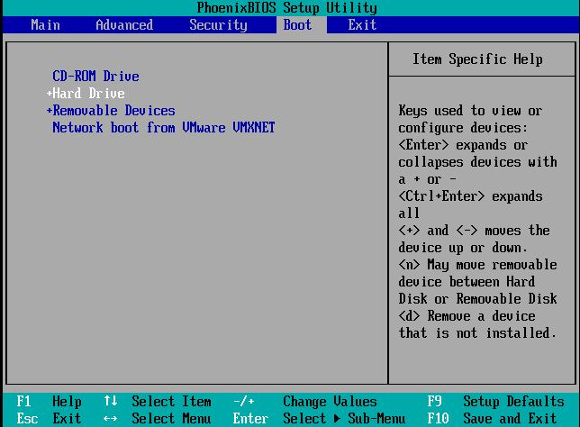
▲圖1 主機設定由光碟機開機
進入 FreeNAS 版本升級選單
當欲升級主機成功使用光碟片開機後，會先進入初始化程序，待開機選單畫面讀秒倒數完畢，會進入 FreeNAS 硬體偵測程序，通過硬體檢查後，光碟片內的 FreeNAS-8.0.1-BETA3 映像檔偵測到目前主機的版本較光碟片內的版本為舊，會出現詢問是否升級 FreeNAS 版本的選單，請選擇「1. Install/Upgrade to hard drive/flash device, etc.」項目按下〔OK〕，準備進入 FreeNAS 升級程序。
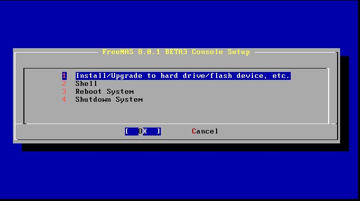
▲圖2 FreeNAS 升級選單，選擇項目 1
選擇升級 FreeNAS 版本的硬碟
接著畫面顯示 FreeNAS 於檢查硬體相容性時偵測到的主機硬碟。我們為該虛擬主機配置二顆硬碟。圖3 顯示請您選擇目的地硬碟，則選擇「da0 VMware Virtual disk 1.0 --2.0 GiB」並按下〔OK〕。
再次提醒：務必事先確定 USB 儲存裝置或硬碟至少具備 2GB 的空間，以免升級後無法開機。
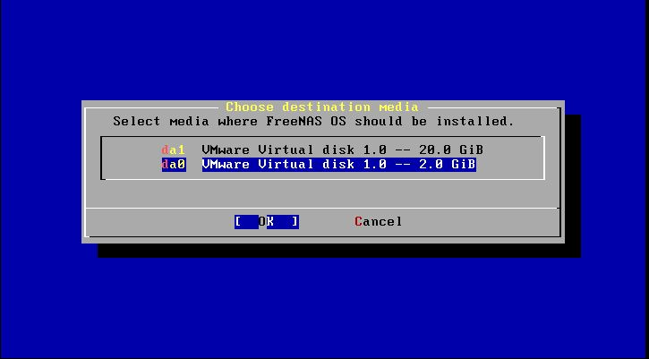
▲圖3 選擇目的地硬碟 2.0GB（da0）
進行 FreeNAS 升級程序
選擇目的地硬碟後，畫面會詢問您是否要升級剛才選擇的硬碟 2.0GB（da0），按下〔Yes〕。
FreeNAS 再次警告目的地硬碟的資料將被清空（警告訊息 1.），且該硬碟其它未使用的空間將無法進行分享設定（警告訊息 2.）。了解警告訊息後按下〔Yes〕。
系統開始進行升級程序，將光碟片內的 FreeNAS-8.0.1-BETA3 資料寫入剛才選擇的 2GB 目的地硬碟，如圖5 您可以看到升級進度百分比、寫入資料的速度、已花費的升級時間、預估剩餘升級時間等資訊。一般來說 FreeNAS 版本升級作業全程不到 1 分鐘。
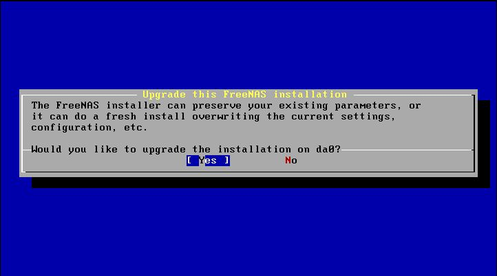
▲圖4 是否對目的地硬碟 da0 進行版本升級
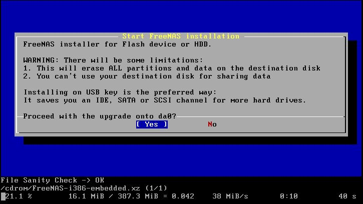
▲圖5 FreeNAS 警告訊息及開始升級的進度資訊
FreeNAS 升級完畢
由於 FreeNAS 是嵌入式 (Embedded) 的設計概念，因此所有設定項目其實是回存至相關的資料庫檔案 (Database File)，而非單純寫入設定檔 (Config Files)，所以讀者應儘量使用圖形管理介面操作後續步驟，才能將相關設定值正確寫入相關資料庫檔案；儘量避免使用指令模式直接修改設定檔內容，以免 FreeNAS 重新啟動後設定值消失。
當 FreeNAS 升級程序完成資料寫入後，會顯示已將相關資料庫檔案更新至目的地硬碟 2GB (da0)，並提示您取出光碟片後重啟主機，按下〔OK〕後會回到一開始的初始安裝畫面，接著選擇「3. Reboot System」，按下〔OK〕重新啟動系統，此時記得退出光碟片。
雖然使用光碟片升級會保留之前的設定值，但仍建議您在升級前備份好相關資料及設定檔以防萬一。
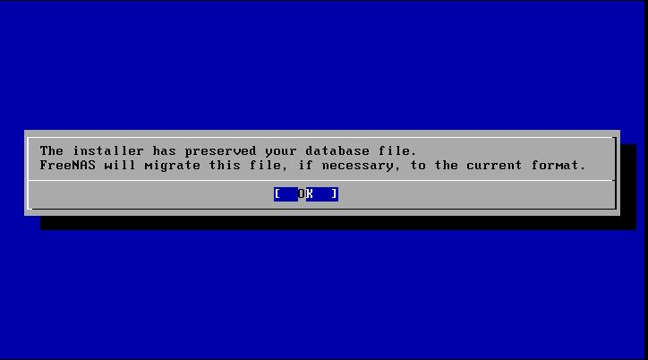
▲圖6 升級程序提示已保存資料庫檔案並會進行遷移（因為分割區大小由 512MB 改為 1GB）
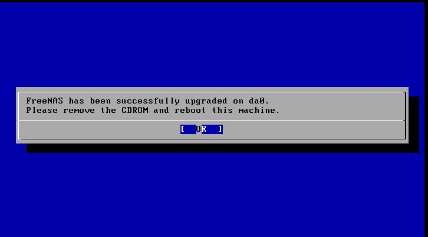
▲圖7 升級程序完畢，系統提示應重新啟動主機
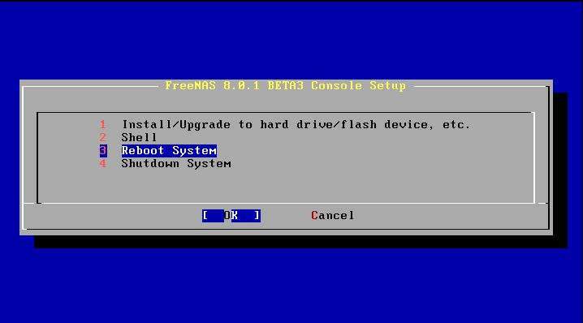
▲圖8 選擇重新啟動項目後確定重新啟動 FreeNAS 主機
新版本 FreeNAS 控制台畫面 (Console)
此時 FreeNAS 主機將會重新啟動 2 到 3 次，因為整個系統分割區的架構已經由原來的 512MB 變更為 1GB 的空間，FreeNAS 還要保留並遷移之前所設定的資料庫檔案，最後是修正相關臭蟲問題等作業。
此次升級實作中我們仍然將 FreeNAS 主機置於具有 DHCP 伺服器的網路，所以主機開機完成後仍能藉由發出 DHCPDISCOVER 廣播封包，順利取得區域網路的 IP 資訊。系統亦提示您可將 https://10.10.25.78 網址 (URLs) 貼至您的瀏覽器，以登入圖形化操作介面。至此 FreeNAS 版本升級作業全部完成。
眼尖的讀者應該已經發現 FreeNAS 控制台畫面中的選項較前版多了 2 個項目，舊的 FreeNAS 8.0 RELEASE 版本其控制台畫面僅有 9 個選項，而升級後的 FreeNAS 8.0.1 BETA3 版本控制台畫面增加了 Reset WebGUI login credentials、Reset to factory defaults 2 個項目。美中不足的是此版本若安裝於虛擬主機，在 vSphere Client 中，VMware Tools 項目狀態仍是部份功能運作正常的「Unmanaged」。
已有人在 FreeNAS 臭蟲回報系統中提及此問題 FreeNAS 8 Freezing On VMware ESXi 4.1，開發團隊承諾會在下一個正式發行版本進行修正（筆者猜測應為 FreeNAS 8.1 Release 版本）。
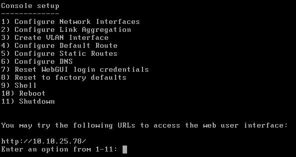
▲圖9 升級後的 FreeNAS 控制台畫面 (Console)
查看升級後 FreeNAS 分割區狀態
進入圖形操作介面以前，請先查看升級後的 FreeNAS 分割區是否真的由原本的 512MB 擴大至 1GB 。請於 FreeNAS 控制台畫面 (Console) 輸入數字【9】進入 Shell 模式，接著輸入「df -h」指令查看目前 FreeNAS 主機的檔案系統掛載狀況。如圖10 所示，目前檔案系統為 1GB 分割區運作（另一個 1GB 分割區在預設情況下是看不到的），表示我們已經順利將 FreeNAS 版本及其分割區空間升級。輸入「exit」指令即可回到 FreeNAS 控制台畫面。
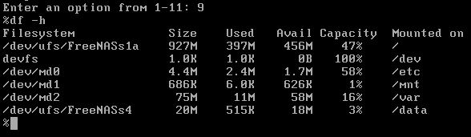
▲圖10 查看升級後 FreeNAS 檔案系統掛載情況
登入 FreeNAS 圖形操作介面
順利登入圖形管理介面後，可以在【System Information】項目內看到 FreeNAS 主機的相關資訊，作業系統版本（OS Version）由先前採用的 FreeBSD 8.2 Release Patch 1 更新為 FreeBSD 8.2 Release Patch 2，並可再次確定 FreeNAS 版本（FreeNAS Build）為升級後的 FreeNAS-8.0.1-BETA3-i386 版本。
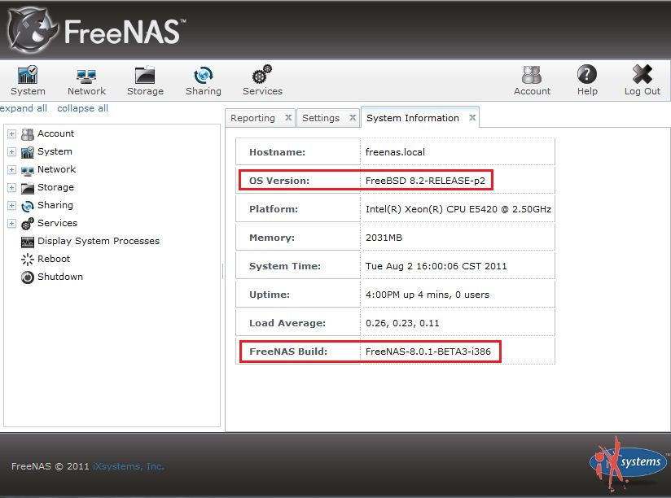
▲圖11 FreeNAS 系統資訊
管理介面正式支援多國語系
在升級前的 FreeNAS 8.0版本中，圖形操作介面僅支援英文 (English) 語系，FreeNAS 8.0.1 BETA1 之後的版本才加入圖形操作介面的多國語系支援，目前我們已經升級至 FreeNAS 8.0.1 BETA3，當然能順利切換圖形管理介面的操作語系。
先切換至項目【System】，點選【Settings】，在【General】頁籤內【Language】下拉選單中選擇所需的語系。若要將操作畫面切換至正體中文語系，請切換至該下拉選單的最後一筆【Traditional Chinese】，按下〔OK〕，再使用組合鍵「Ctrl + F5」重新整理頁面，或者登出後重新登入，圖形操作介面便會變成熟悉的正體中文。
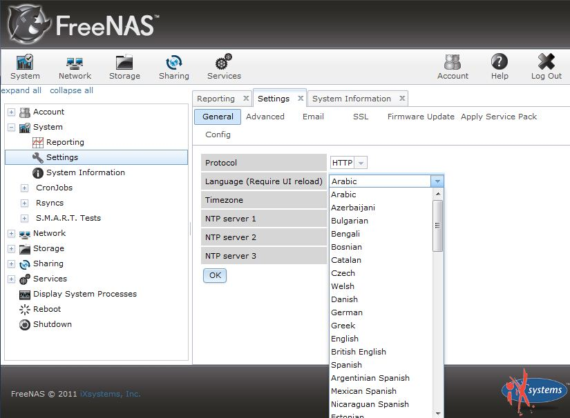
▲圖12 FreeNAS 圖形操作介面，正式支援多國語系
不過在此建議讀者先別急著把圖形操作介面改成正體中文，因為在下一篇文章中要實作的升級方式是採用 GUI 圖形介面進行升級，筆者測試後發現，若操作介面語系改為正體中文，將找不到上傳韌體檔案所需的暫存空間，相信 FreeNAS 開發團隊會在之後的版本修正此錯誤。
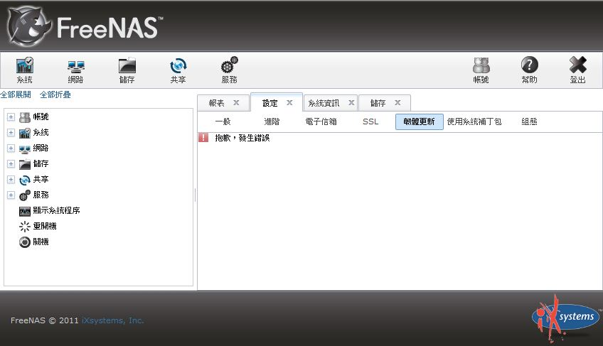
▲圖13 正體中文語系操作介面無法進行韌體檔案更新
協助本地化語系翻譯
FreeNAS 在圖形操作介面上已經正式支援多國語系了，若您覺得圖形操作介面的正體中文翻譯不盡理想，或者您也想為本地化翻譯工作盡一份心力，可以至 FreeNAS 翻譯系統網站註冊一個帳號協助翻譯。目前正體中文翻譯工作在相關熱心人士的努力下已經完成 99%。
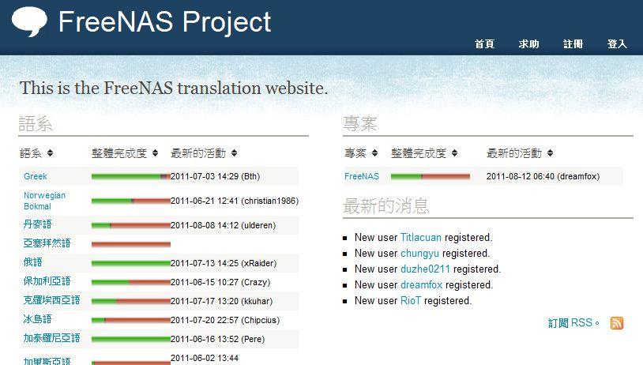
▲圖14 FreeNAS 本地化翻譯系統
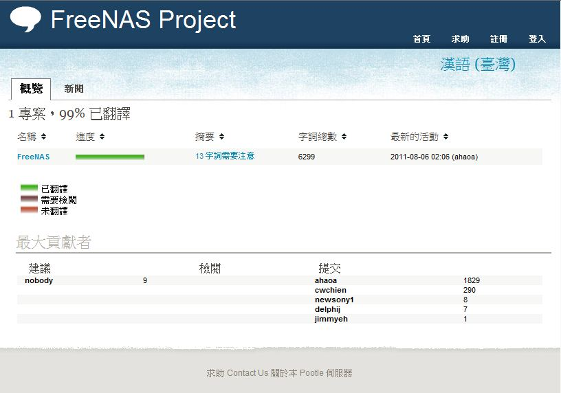
▲圖15 正體中文翻譯進度
待續
本文至此已經詳細說明如何透過燒錄 FreeNAS-8.0.1-BETA3-i386.iso 映像檔升級 FreeNAS 版本、驗證此版本確實將檔案系統的分割區大小由 512MB 提升至 1GB、說明如何切換圖形操作介面的語系，最後介紹如何參與 FreeNAS 本地化翻譯。
下一篇文章將透過下載 FreeNAS 官網上的 FreeNAS-8.0.1-BETA4-i386-GUI_Upgrade.xz 韌體檔案，由瀏覽器登入 FreeNAS-8.0.1-BETA3 版本的 FreeNAS 主機，以圖形介面升級版本至最新發行的 FreeNAS-8.0.1-BETA4。
您也許有興趣閱讀以下文章:
- 利用 FreeNAS 打造儲存設備 (8)──網路設定篇之頻寬合併 - 2012-01-13
- 利用 FreeNAS 打造儲存設備 (7)─Failover（故障轉移） - 2011-11-28
- 利用 FreeNAS 打造儲存設備 (6) 網路設定篇─基礎設定 - 2011-10-14
- 利用 FreeNAS 打造儲存設備(5)安裝篇（嵌入式 USB） - 2011-10-04
- 利用 FreeNAS 打造儲存設備(4)─安裝篇（由 GUI 升級） - 2011-09-13
- 利用 FreeNAS 打造儲存設備(2)－安裝篇 - 2011-08-18
- 利用 FreeNAS 打造儲存設備(1)－歷史篇 - 2011-08-03
自由軟體鑄造場電子報 : 第 180 期 一百年度自由軟體鑄造場作業暨智財權說明會
標籤: FreeNAS, nas, network-attached storage, cd, install,
分類: 技術專欄